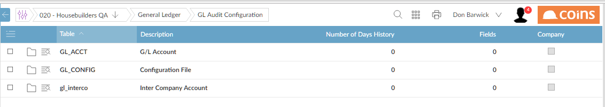

Auditing
Most modules have one or more master files, which contain tables of information relevant to that module.
Auditing allows you to keep track of any additions, changes or deletions that are made to the file.
You can show the changes to a field (if auditing has been set up for that field) by highlighting it and clicking  .
.
To set up auditing:
- From the Auditing menu in the relevant module, select Audit Configuration.
displays a frame showing the tables in the module that can be audited.
GL Audit Configuration Screen

- To set up auditing for a table, select it and do one of the following:
- To set up auditing for all (global), open the record.
- To set up auditing for the current only, select Create Specific from the Chose Action list, then open the record.
- To restore a -specific setting to the global value, select Delete Specific from the Chose Action list.
- In the History field, enter the number of days history you want retained. (When you run the Audit Delete procedure, it will delete records of audited changes made more than this number of days earlier.)
- Enter a comma-separated list of the fields that you want to be audited.
- To finish, click
 to return to the list of tables.
to return to the list of tables.